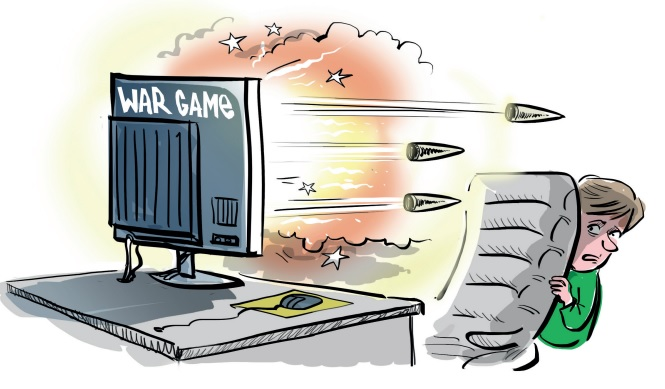

ОНЛАЙН-ИГРЫ
назад
Онлайн-игра – компьютерная игра, главной особенностью которой является
необходимость постоянного подключения к сети Интернет. Число игроков в самых
популярных онлайн-играх может достигать сотен тысяч пользователей.
Многие родители не задумываются в какие игры играют их дети, и не контролируют соблюдение
возрастных ограничений, не проверяют с кем они общаются в играх, сутками проводя время за
компьютером

Какие опасности есть в онлайн-играх?
Жестокие сюжеты – некоторые компьютерные игры, особенно в жанре «стрелялки от первого
лица», пропагандируют жестокость и насилие. Видеоигры указанного жанра, изначально
разработанные для тренировки сотрудников служб специального назначения для выработки
оптимального поведения в экстремальной ситуации, вызывают повышенный интерес у детей
и нередко случается, что ребенок хочет повторить сценарий такой игры в реальности. Многие
эксперты отмечают, что подростки, планировавшие вооруженные нападения на образовательные
учреждения, почти все свое свободное время проводили в онлайн-играх подобного жанра.
Дети и подростки во внутриигровых чатах, в специализированных
приложениях, а также в чатах стриминговых платформ, где обсуждаются
онлайн игры (таких как Twitch, Discord) общаются с совершенно
незнакомыми людьми и могут стать жертвой агрессии, травли и
неприемлемого общения со стороны незнакомых взрослых игроков.
Во внутриигровых чатах незнакомые взрослые могут отправить ребенку ссылки на
мошеннические ресурсы, частные сервера или закрытые группы в соцсетях.
Общение в игровых чатах практически невозможно отследить и контролировать. Этим
пользуются провокаторы и преступники, которые ищут в игровых сообществах детей и подростков,
поддающихся внушению, и заманивают их в свои преступные схемы.
Многие современные онлайн-игры позволяют создать свой собственный «сервер», в котором
можно реализовать любую идею: воссоздать любую точку на земном шаре, либо создать
симуляцию боевых действий, причем такой хостинг может находиться в любой точки земного
шара. Управляется такой сервер только администратором (модератором), доступ предоставляется
исключительно по рассылаемым пользователям ссылкам-приглашениям (инвайтам).
Все действия вроде бы совершаются в игровой манере, но параллельно они отпечатываются
в сознании ребенка. Подросток радуется тому, что достиг нового ранга в игре, а на самом деле
он даже не догадывается, что может быть вовлечен в серьезное преступное сообщество.
Некоторые игры используют GPS и постоянно собирают информацию о местоположении игрока.
А это значит, что и другие участники игрового сообщества могут узнать, где находится ребенок в
данный момент.